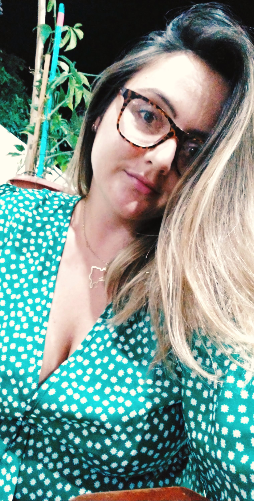

JUSTIANE ARIELE BAZZAN
Advogada, brasileira, 29 anos, curiosa por natureza.
Sobre mim
Nasci em um pequeno município do Rio Grande do Sul, chamado de Aratiba, no dia 18 de fevereiro de 1992. Meu signo é Aquário, liberdade é um dos meus lemas.
Falo bastante quando fico nervosa ou quando estou com meus amigos, eu sei, sou tagarela;falo espanhol( pelo menos eu penso que sim), com duas sobrinhas que não falam português, você tem que se virar, não é mesmo?
Tenho senso de humor ácido, normalmente sou direta, mas aprendi que o silêncio é poderoso. Feminista em contrução.Cantora de chuveiro. Master Cheff, quando tenho fome. Aventureira.Tenho medo de altura,
mas já pulei de Parapente
no Equador e andei de Bondinho no Chile.
Volta e meia eu to aqui, volta e meia estou no outro lado do continente.
Pra saber se já me viu na rua, eu pareço com a foto ao lado, mas as vezes não.

Formação
- Advogada desde 2017
- Pós-graduada em Relações Internacionais(2019).
- Pós- graduanda em Direito Previdenciário, Público e Empresarial(2020-2021).
- Estudante e entusiasta por programação (2021).
Hobbys
- Livros: eu amo um bom romance e livros de autoconhecimento, de Direito quando é necessário.
- Séries: adoro ficar sozinha, bebendo um vinho e assistindo.
- Andar de bike e caminhar: quando já não aguento ficar em casa, saiu dar as caras pela cidade.
- Escrever: hábito que adquiri depois de perder pessoas importantes na minha vida.
Paixões
- Minha família em especial minhas sobrinhas.
- Viagens
- Vinho.
- Músicas em espanhol.
- Greys Anatomy.
- Gilmore Gilrs.
- Harry Potter
TEXTOS AUTORAIS
Saudades
Eu sinto saudades de pessoas que se foram a algum tempo, e outras a pouco.
Eu sinto saudades de pessoas que moram longe e de pessoas que estão pertinho.
Eu sinto saudades de poder me expressar sem ter que dar explicações.
Sinto saudades de chegar em um lugar e ninguém me conhecer e fazer novos amigos.
Eu sinto saudades de ser livre, sem nunca ter sido, realmente.
Sinto saudades de momentos que perdi, de amores que amei, e de desamores também.
Tenho saudades da época de criança, de levantar as 6am e assistir desenhos, sem os boletos para me preocupar.
Tenho saudades de ser boa em matemática, como na época de escola.
Tenho saudades de sair de casa e ir na praça com meus amigos, jogar vôlei. Hoje já não são amigos.
Saudades da época em que não analisávamos os pensamentos, ações e amores.
Saudade de sentir.
Saudades de amar.
Saudades de viver.
Saudade de um outro eu.
Liberdade
Eu tenho aquela coisa de não querer criar raízes.
Eu sinto que ficar em um único lugar, me sufoca, fere minha alma.
Assim, como meus pensamentos eu nunca segui padrões.
Eu nunca quis ser mãe, eu nunca quis ser esposa.
Eu sempre quis ser eu.
Eu sempre quis que meu eu fosse completo, que fosse cheio de aventuras, histórias, lugares, pessoas, amores( mais que um),
risadas, bebidas, músicas e emoções.
Eu nunca quis ser morno, eu não sei ser, eu sou um vulcão em erupção ou simplesmente não sou.
Eu posso não saber ao certo quem eu sou, mas é minha vida, e ninguém pode me dizer como vive-la, a não ser eu.
Que eu nunca esteja satisfeita com meu eu.
Que eu sempre deseje mais.